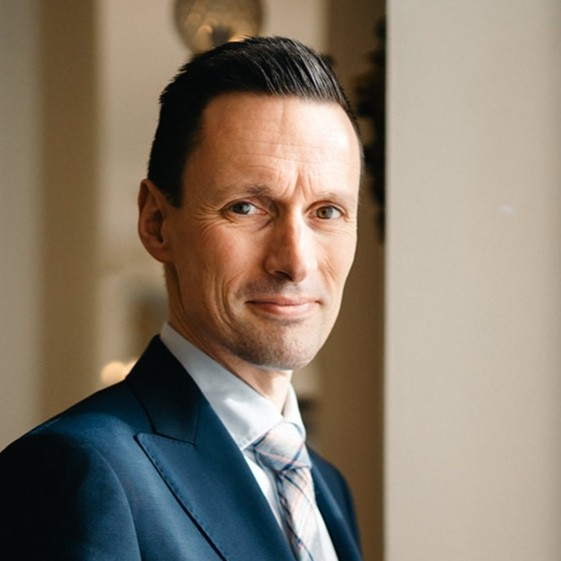

Strategisch Advies · Europa
Calea Connect begeleidt publieke en private organisaties bij complexe vraagstukken rond energie, vastgoed en Europese projecten — vanuit Roemenië en België, actief in gans Europa.

Over ons
Björn Anseeuw is strategisch consultant met een achtergrond in de Belgische politiek en een diepe expertise in energie, vastgoed en Europese projecten. Als voormalig lid van het Belgisch federaal parlement (2014–2024) en voormalig schepen ontwikkelde hij een scherp inzicht in complexe regelgevende en institutionele omgevingen.
Vandaag begeleidt hij publieke en private organisaties bij uiteenlopende vraagstukken in energie, vastgoed en Europese fondsen — van lokale projecten tot grensoverschrijdende trajecten, met bijzondere aandacht voor de Belgisch-Roemeense corridor en het bredere Europese speelveld.
Wat wij doen
Wij bieden strategisch advies op maat — van lokale projecten tot complexe Europese fondsentrajecten.
Energiegemeenschappen, hernieuwbare energie en marktmechanismen. Van business case tot vergunning, inclusief stakeholdermanagement, in België, Roemenië en de EU.
Investerings- en ontwikkelingsanalyse voor residentiële en commerciële projecten in België, Roemenië en aangrenzende markten.
Begeleiding van complexe publieke en private projecten van strategie tot oplevering — inclusief Europese fondsentrajecten (Interreg, Horizon Europe, CEF, LIFE, ELENA, EIB, ...) door gans Europa.
Onze expertise
Strategisch advies stopt niet bij het rapport. Wij begeleiden van de eerste diagnose tot de concrete uitvoering — en meten succes aan meetbare uitkomsten.
Op maat gemaakte tools voor assetoptimalisatie, financiële modellering en projectrapportage.
Ervaring aan beide zijden van de tafel: als voormalig parlementslid en schepen, én als privéconsultant. Die dubbele blik helpt bij het navigeren van complexe besluitvormingsprocessen.
Van conceptnota tot eindrapportage: wij begeleiden Interreg-, Horizon- en CEF-trajecten door heel Europa. Met een actief partnernetwerk in België, Roemenië en andere lidstaten voor snelle consortiumvorming.
Samenwerken
Vertel ons over uw project — of het nu gaat om een Roemeense overheidsopdracht, een Belgisch energieproject of een Europees consortiumtraject. Eerste gesprek is altijd vrijblijvend.